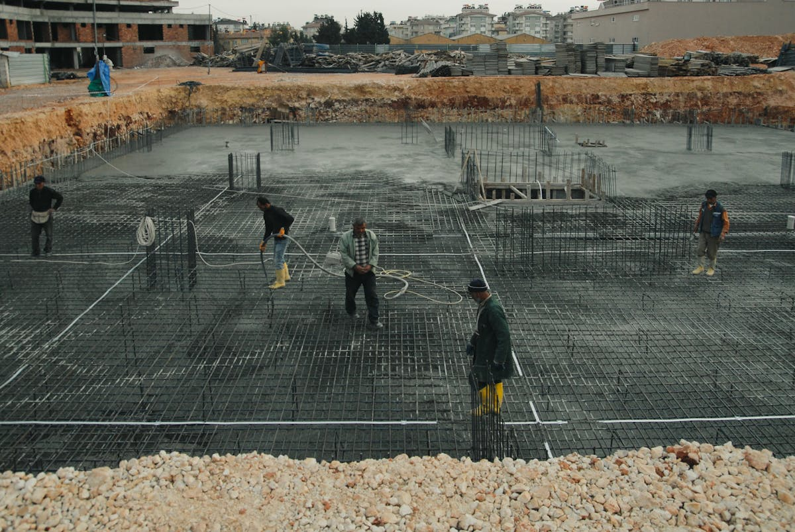
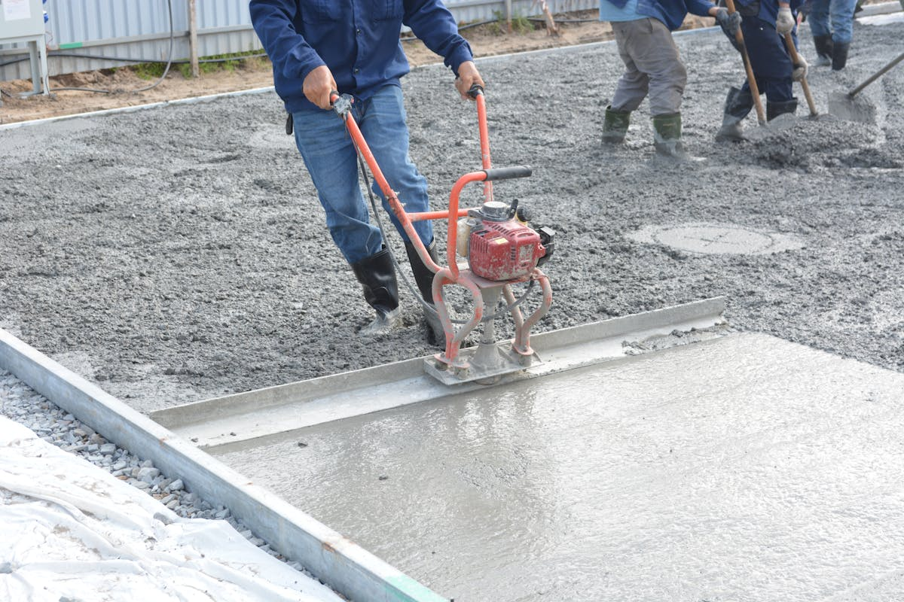

Driveways & Parking Pads
New driveways, replacement driveways, driveway extensions, aprons, widened parking, and concrete pads.
Shoshoni • Fremont County, WY • Driveways, patios, slabs, repair, and replacement
County 10 Concrete serves Shoshoni homes, shops, rural properties, and small commercial projects. Send the address, photos, access notes, and rough dimensions so we can review the job clearly.

Fastest quote: text photos, your Shoshoni address, rough measurements, site access notes, and what you need poured, repaired, or replaced.
Send the basics and we will get back to you with the next step. Concrete work depends on prep, materials, access, weather, finish, and schedule.
Prefer texting? 307-349-4694
Residential, rental, shop, rural property, and small commercial concrete work across Shoshoni and Fremont County.
New driveways, replacement driveways, driveway extensions, aprons, widened parking, and concrete pads.
Patios, porches, sidewalks, entries, landings, steps, and outdoor flatwork.
Concrete slabs for garages, shops, sheds, additions, equipment pads, and utility areas.
Decorative stamped concrete for patios, walkways, entries, and outdoor gathering spaces.
Cracked, settled, rough, or failing concrete reviewed for repair, tear-out, or replacement.
Sidewalks, pads, access areas, small parking sections, shop work, and practical flatwork for businesses.
Driveway replacement, widened parking, approaches, and concrete pads for daily use.
Backyard patios, entries, sidewalks, landings, and safer walking paths around the property.
Slabs for detached garages, shop buildings, sheds, additions, equipment pads, and utility areas.
Concrete pads for outbuildings, equipment, utility areas, and practical work around rural properties.
Old concrete removal, base prep, replacement pours, and honest guidance when patching will not hold.
Business pads, access walks, sidewalk panels, and practical flatwork for local properties.
Your project is reviewed with attention to scope, access, prep, schedule, finish, and the right crew for the work.
Coverage for homeowners, property managers, contractors, landlords, shops, and small commercial customers.
We review photos, measurements, access, finish type, old concrete, prep, and timing before scheduling.
Concrete is planned around drainage, base conditions, reinforcement, freeze-thaw, and real daily use.
Send the project details and we will tell you the right next step without making the process complicated.
Shoshoni is part of the listed County 10 Concrete service area.
Concrete services in Shoshoni include driveways, patios, slabs, repair, replacement, and practical flatwork.

Driveways, patios, slabs, repair, replacement, and flatwork for Shoshoni-area properties.
Concrete scope, finish, and layout are reviewed before scheduling.
Shoshoni projects can range from driveway and parking work to shop slabs and utility pads. We review travel, prep, access, and timing before giving the next step.
County 10 Concrete serves Shoshoni, Fremont County, and nearby communities across Fremont County and Natrona County. If your town is not listed, call or text and we will review the job.
Yes. County 10 Concrete serves Shoshoni and the surrounding Fremont County area. Send the address and photos so we can confirm the next step.
Pricing depends on size, prep, thickness, reinforcement, finish, access, removal, drainage, and schedule. Photos and rough measurements help us review the project faster.
Yes, project dependent. Send photos of the existing concrete so we can review tear-out, access, base prep, and replacement needs.
Send the Shoshoni address, photos from several angles, rough measurements, desired finish, access notes, and whether old concrete needs removed.
Yes. County 10 Concrete offers free estimates for concrete projects in Shoshoni and the service area.
Text photos, your address, rough measurements, and what you need poured, repaired, or replaced. We will get back to you with the next step.
Free estimates. Licensed & insured. Professional crew.